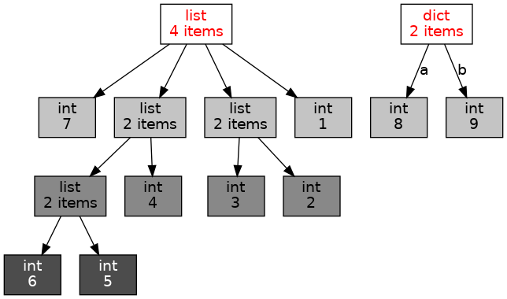

v.3.8, 12 декабря 2021 года
Технология объектно-ориентированного программирования (ООП) родилась (в 80-х годах прошлого века) в ответ на кризис структурного программирования, связанного с ростом сложности и размера программного обеспечения. Формальными признаками ООП являются наследование, инкапсуляция и полиморфизм. Иногда к ним причисляют ещё и абстракцию.
Инкапсуляция (от лат. in capsula) — изоляция, упаковка данных (и методов) в единый компонент, называемый классом. В отличие от большинства других объектно-ориентированных языков Python поддерживает инкапсуляцию в основном на уровне соглашения, а не синтаксиса языка.
Наследование — механизм, позволяющий создавать новые классы на основе уже существующих.
Полиморфизм — возможность реализации различного поведения одного и того же метода для объектов различных классов (типов). Например, сложение чисел и сложение строк выполняют совершенно разные действия.
Абстракция — использование лишь тех характеристик объекта, которые важны при решении конкретной задачи. Абстракция и инкапсуляция позволяют сводить решение больших и сложных задач к решению многих значительно более простых и организовывать тем самым совместную работу коллектива программистов.
Написанные и отлаженные библиотеки классов позволяют реализовать многократное использование кода значительно более удобным способом, чем библиотеки, существовавшие до появления объектно-ориентированного подхода в программировании.
«Вселенная», возникающая в момент запуска любой Python-программы, состоит из объектов
различных типов (классов). Объектами в языке Python является всё: целые
и действительные числа, строки, списки, ассоциативные массивы
(словари), функции (методы), … Узнать тип (класс) объекта можно с
помощью функции type:
>>> type(1_000)
<class 'int'>
>>> type(2.71)
<class 'float'>
>>> type("строка")
<class 'str'>
>>> type([1, 2, 3])
<class 'list'>
>>> type({"a": 8, "b": 9})
<class 'dict'>
>>> type(round)
<class 'builtin_function_or_method'>В реальной жизни все объекты обладают индивидуальными свойствами. Но, сделав некоторые обобщения, можно разделить объекты на группы. Каждая из таких групп будет обладать одинаковым набором свойств и, как следствие, к ней будут применимы одинаковые наборы действий. В языке программирования Python, как и в большинстве других современных языков, для описания свойств групп объектов и применимых к этим объектам действий, используется понятие класса.
Класс — это формальное описание основных свойств объекта (его
атрибутов) и применимых к нему методов. Если у нас есть готовый класс,
то мы можем создавать «бесконечно много» объектов, удовлетворяющих
описанию этого класса. Для задания класса используется ключевое слово class.
Во время работы программы «вселенная» развивается благодаря взаимодействию между её отдельными компонентами (объектами). Объекты взаимодействуют друг с другом, обмениваясь сообщениями, или, как ещё говорят, выполняя методы. Вот простейшие примеры взаимодействия:
>>> (2).__add__(3)
5
>>> "мяу ".__mul__(3)
'мяу мяу мяу 'В первом случае целому числу (объекту 2) было послано сообщение (или вызван метод; вызов метода всегда обозначается точкой, после которой следует имя метода и, возможно, аргументы в круглых скобках) «добавить 3». В результате был создан новый объект — число 5. Во втором для строки (объекта "мяу ") был вызван метод «умножить на 3».
Заметим, что для сложения и умножения обычно используют более привычный операторный синтаксис:
>>> 2 + 3
5
>>> "мяу " * 3
'мяу мяу мяу 'Следует понимать, однако, что это всего лишь сокращённая форма записи обычного вызова методов.
Итак, Python-программа создаёт маленькую вселенную. Интересно, а что
именно в ней есть для очень простой программы? Разобраться в этом нам
поможет модуль objgraph, дающий возможность получить графическое представление вселенной, созданной Python-программой.
Надо знать, что методы модуля objgraph никогда не учитывают и не показывают так называемые simple objects — объекты классов int, float, str и некоторых иных. С помощью метода show_most_common_types данного модуля можно получить количество объектов различных типов:
import objgraph
objgraph.show_most_common_types()В случае отсутствия пакета
objgraphего можно установить командойpip install objgraph.
Эта программа печатает примерно такой результат:
function 3084
dict 1562
tuple 1258
wrapper_descriptor 1039
builtin_function_or_method 836
weakref 778
method_descriptor 751
getset_descriptor 506
member_descriptor 329
type 324Обратите внимание, что практически ничего не делающая программа сразу после её запуска создаёт вселенную, содержащую несколько тысяч объектов.
Для того чтобы получить более подробный и полный список всех объектов (кроме simple objects), метод show_most_common_types следует вызвать с параметрами:
import objgraph
objgraph.show_most_common_types(limit=100, shortnames=False)Выполните этот код самостоятельно.
Ещё интереснее возможность получения графического представления вселенной объектов программы с помощью метода show_refs. Вот простой пример:
import objgraph
obj1 = [1, [2, 3], [4, [5, 6]], 7]
obj2 = {"a": 8, "b": 9}
objgraph.show_refs([obj1, obj2], filename="list.png")Эта программа создаёт файл с именем list.png следующего содержания:

На этом рисунке хорошо видно, что переменная obj1
указывает на список из четырёх элементов, два из которых сами являются
списками. При этом один из этих списков содержит два числа, а
другой — список из двух элементов и целое число. Переменная obj2 указывает на словарь (ассоциативный массив) из двух элементов: ключу a соответствует значение 8, а ключу b — значение 9.
Frac — простые дробиЯзык Python предоставляет возможность работы с простыми дробями с помощью модуля fractions и класса Fraction этого модуля:
from fractions import Fraction
a = Fraction(1, 2)
b = Fraction(2, 6)
print(f"{a} - {b} = {a-b}")Выполнение этой программы приводит к печати следующей строки:
1/2 - 1/3 = 1/6Исходный код класса Fraction желающие могут подробно
изучить в дальнейшем, а мы сейчас попробуем реализовать часть
возможностей этого класса, создав собственный класс Frac.
Прежде всего надо понять, какими атрибутами (свойствами и наборами
действий) следует наделить объекты этого класса. Свойства определяют
атрибуты-данные (data attributes), а действия — атрибуты-методы
(metods). Простая дробь задаётся её числителем и знаменателем, поэтому
логично именно их и выбрать в качестве атрибутов-данных. Так как объект
«просто дробь» без указания этих двух атрибутов не является слишком
полезным, то при создании объекта класса Frac следует
потребовать обязательного задания числителя и знаменателя дроби. Для
метода создания (инициализации) объектов в языке Python используется имя
__init__, первым аргументом которого является self — конструируемый данным методом экземпляр класса.
Во многих языках программирования метод, инициализирующий объект при его создании, называют конструктором.
Как уже отмечалось ранее, запись a-b в языке Python является всего лишь сокращением записи a.__sub__(b), обозначающей вызов метода с именем __sub__ (от subtracion — вычитание) объекта a с параметром b:
from fractions import Fraction
a = Fraction(1, 2)
b = Fraction(2, 6)
print(f"({a}).__sub__({b}) = {a.__sub__(b)}")Поэтому для реализации возможности вычитания «наших дробей» (объектов типа Frac) необходимо определить метод __sub__.
Имена методов, соответствующие различным операциям языка Python с числами, можно узнать из раздела Emulating numeric types официальной документации.
Объединяя всё вышесказанное, можно написать такой код:
class Frac:
# n - numerator (числитель)
# d - denominator (знаменатель)
def __init__(self, n, d):
self.n = n
self.d = d
# разность между «самим» объектом (self) и каким-то иным (other)
def __sub__(self, other):
return Frac(self.n * other.d - other.n * self.d, self.d * other.d)
a = Frac(1, 2)
b = Frac(2, 6)
print(f"{a} - {b} = {a-b}")Метод __sub__ является так называемым методом экземпляра: его первым аргументом является self, и вызывается он (неявно) так: obj.__sub__(other). Здесь obj — тот экземпляр класса Frac, к которому применяется этот метод, а other — аргумент метода.
Запуск написанной программы приводит к выводу чего-то подобного следующему:
<__main__.Frac object at 0x7f35ce6c1c50> - <__main__.Frac object at 0x7f35ce643208> = <__main__.Frac object at 0x7f35c68baf60>Исполняющая система языка Python «не знает», как печатать объекты типа Frac! Это легко исправить, добавив метод __repr__ (от representation — представление), который позволяет получить представление объекта в виде строки:
class Frac:
# n - numerator (числитель)
# d - denominator (знаменатель)
def __init__(self, n, d):
self.n = n
self.d = d
# разность между «самим» объектом (self) и каким-то иным (other)
def __sub__(self, other):
return Frac(self.n * other.d - other.n * self.d, self.d * other.d)
# представление объекта в виде строки
def __repr__(self):
return f"{self.n}/{self.d}"
a = Frac(1, 2)
b = Frac(2, 6)
print(f"{a} - {b} = {a-b}")Это уже лучше, но дроби не сокращаются. Обеспечить автоматическое
сокращение дробей при наличии у числителя и знаменателя общего
множителя, большего единицы, легко с помощью метода gcd модуля math. Делать это надо при создании дроби, то есть в методе __init__.
Полезно также заметить, что знаменатель дроби не должен равняться нулю.
При попытке создать дробь с нулевым знаменателем лучше всего возбуждать
исключительную ситуацию:
from math import gcd
class Frac:
# n - numerator (числитель)
# d - denominator (знаменатель)
def __init__(self, n, d):
if(d == 0):
raise ZeroDivisionError
t = gcd(n, d)
self.n = n // t
self.d = d // t
# разность между «самим» объектом (self) и каким-то иным (other)
def __sub__(self, other):
return Frac(self.n * other.d - other.n * self.d, self.d * other.d)
# представление объекта в виде строки
def __repr__(self):
return f"{self.n}/{self.d}"
a = Frac(1, 2)
b = Frac(2, 6)
print(f"{a} - {b} = {a-b}")
c = Frac(1, 0)Пользоваться нашим классом Frac пока, конечно же,
практически невозможно. Ведь кроме вычитания есть и иные арифметические
операции. Хотелось бы также считать целые числа частным случаем дробей,
дроби (и целые числа) надо бы уметь правильно (выполните
нижеприведённую программу) сравнивать между собой. Наконец, числитель и
знаменатель дроби могут быть отрицательными (см. результат запуска
нижеприведённой программы). Все указанные недостатки класса Frac предлагается устранить в одной из задач для самостоятельного решения.
Файл frac.py
from math import gcd
class Frac:
# n - numerator (числитель)
# d - denominator (знаменатель)
def __init__(self, n, d):
if(d == 0):
raise ZeroDivisionError
t = gcd(n, d)
self.n = n // t
self.d = d // t
# разность между «самим» объектом (self) и каким-то иным (other)
def __sub__(self, other):
return Frac(self.n * other.d - other.n * self.d, self.d * other.d)
# представление объекта в виде строки
def __repr__(self):
return f"{self.n}/{self.d}"
a = Frac(1, 2)
b = Frac(2, 6)
try:
print(a + b)
except (Exception):
print("Не работает!")
try:
print(a * b)
except (Exception):
print("Не работает!")
try:
print(a / b)
except (Exception):
print("Не работает!")
try:
print(a + 1)
except (Exception):
print("Не работает!")
try:
print(a < 1)
except (Exception):
print("Не работает!")
try:
print(Frac(0, 1) == Frac(0, 1))
except (Exception):
print("Не работает!")
print(Frac(-1, -3))R2Point — точки на плоскостиОбъекты этого класса можно также считать векторами на плоскости.
Как известно, точка на плоскости R2Point. Какие методы следует реализовать в классе R2Point зависит от задачи, в которой понадобился этот класс. Достаточно часто могут оказаться полезными следующие возможности:
Вот как всё это может быть реализовано:
Файл r2point.py
from math import sqrt
class R2Point:
""" Точка (Point) на плоскости (R2) """
# Конструктор
def __init__(self, x=None, y=None):
if x is None:
x = float(input("x -> "))
if y is None:
y = float(input("y -> "))
self.x, self.y = x, y
# Расстояние до другой точки
def dist(self, other):
return sqrt((other.x - self.x)**2 + (other.y - self.y)**2)
# Площадь треугольника
@staticmethod
def area(a, b, c):
return 0.5 * ((a.x - c.x) * (b.y - c.y) - (a.y - c.y) * (b.x - c.x))
if __name__ == "__main__":
x = R2Point(1.0, 1.0)
print(type(x), x.__dict__)
print(x.dist(R2Point(1.0, 0.0)))
a, b, c = R2Point(0.0, 0.0), R2Point(1.0, 0.0), R2Point(1.0, 1.0)
print(R2Point.area(a, c, b))
x = R2Point(1.0)
print(type(x), x.__dict__)
x = R2Point()
print(type(x), x.__dict__)Метод __init__ является примером метода со значениями по умолчанию (default argument values). Выполнение команды python r2point.py иллюстрирует, в частности, его работу.
Метод dist в дополнительных комментариях не нуждается, а вот о методе area необходимо поговорить особо. «Декоратор» (decorator) @staticmethod означает, что этот метод не может быть вызван в форме obj.area с указанием того объекта obj, к которому он применяется. Вместо объекта при вызове такого (статического) метода, называемого методом класса, следует указывать имя класса. Заметьте, что в списке его аргументов при определении метода отсутствует параметр self.
Можно «превратить» метод класса area в метод экземпляра area0, который будет «делать ту же работу»:
def area0(self, b, c):
return 0.5 * ((self.x - c.x) * (b.y - c.y) - (self.y - c.y) * (b.x - c.x))Вызывать такой метод следует иначе:
a, b, c = R2Point(0.0, 0.0), R2Point(1.0, 0.0), R2Point(1.0, 1.0)
print(a.area0(c, b))Если при вызове метода касса area мы «просим класс R2Point вычислить площадь треугольника, задаваемого тремя аргументами-точками», то вызов метода экземпляра «обращается к точке a с просьбой определить площадь треугольника, образованного ей и двумя аргументами-точками».
Нам уже известно, что функция type возвращает тип (класс) объекта. Метод __dict__ позволяет увидеть атрибуты экземпляра класса вместе с их значениями, представленные в виде словаря (ассоциативного списка).
Для иллюстрации правильности кода класса R2Point следует использовать тесты. Они могут также помочь понять, чем ориентированная площадь треугольника отличается от «обычной».
Файл test_r2point.py
from pytest import approx
from math import sqrt
from r2point import R2Point
class TestR2Point:
# Расстояние от точки до самой себя равно нулю
def test_dist1(self):
a = R2Point(1.0, 1.0)
assert(a.dist(R2Point(1.0, 1.0)) == approx(0.0))
# Расстояние между двумя различными точками положительно
def test_dist2(self):
a = R2Point(1.0, 1.0)
assert(a.dist(R2Point(1.0, 0.0)) == approx(1.0))
def test_dist3(self):
a = R2Point(1.0, 1.0)
assert(a.dist(R2Point(0.0, 0.0)) == approx(sqrt(2.0)))
# Площадь треугольника равна нулю, если все вершины совпадают
def test_area1(self):
a = R2Point(1.0, 1.0)
assert(R2Point.area(a, a, a) == approx(0.0))
# Площадь треугольника равна нулю, если все вершины лежат на одной прямой
def test_area2(self):
a, b, c = R2Point(0.0, 0.0), R2Point(1.0, 1.0), R2Point(2.0, 2.0)
assert(R2Point.area(a, b, c) == approx(0.0))
# Площадь треугольника положительна при обходе вершин против часовой
# стрелки
def test_area3(self):
a, b, c = R2Point(0.0, 0.0), R2Point(1.0, 0.0), R2Point(1.0, 1.0)
assert(R2Point.area(a, b, c) > 0.0)
# Площадь треугольника отрицательна при обходе вершин по часовой стрелке
def test_area4(self):
a, b, c = R2Point(0.0, 0.0), R2Point(1.0, 0.0), R2Point(1.0, 1.0)
assert(R2Point.area(a, c, b) < 0.0)Дополните класс Frac необходимым методами так, чтобы корректно выполнялись все операции, указанные в файле frac.py после определения класса (программа в самом конце раздела «Класс Frac — простые дроби»).
Создайте класс R3Point, задающий вектор в трёхмерном
пространстве. Реализуйте методы сложения, вычитания, умножения на
число, повороты вокруг осей на заданный угол, скалярное и векторное
произведение двух векторов и смешанное произведение трёх. Приведите
тесты, иллюстрирующие правильность реализации указанных методов.